Turn any tablet or screen into a self-service price checker: customers scan a barcode and instantly see the price, every variant and the stock in each of your warehouses. No login, one secret link per kiosk, in the customer’s own language – including Arabic, right to left.
Customers want to check a price or a size without waiting for staff. Odoo already has the data; it just has no screen made for them.
From install to a working kiosk in a few minutes.
Screenshots use the module’s demo data: a T-shirt (3 colours × 3 sizes), sneakers with one combination not sold, three warehouses with shelves, and a VIP Members pricelist.
The Price Checker app lists your kiosks under Price Checker › Kiosks, each with an Open button. Administrators also get Configuration › Pricelists and Configuration › Product Attributes as shortcuts.
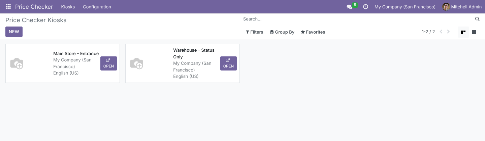
Every kiosk gets its own Kiosk URL with a copy button. Regenerate Token invalidates the old link immediately (lost tablet, staff change). On the Pricing tab, order the pricelists you want to display and give each one a translatable Label; the first line is the big price. Show Original Price strikes through the list price whenever a pricelist is cheaper.
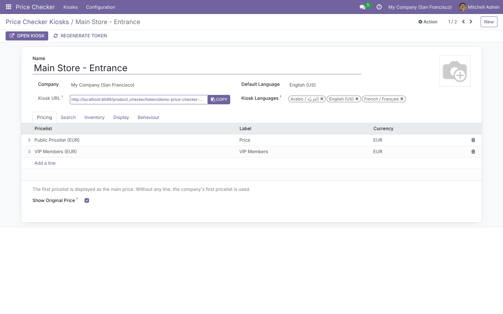
Hardware scanners work out of the box, even when the search field is not focused. Exact matches on Barcode, Packaging Barcode or Internal Reference open the right variant directly; otherwise a name search returns a grid of products. On supported devices a camera button scans with the browser’s built-in barcode reader. The Search tab also sets the Products Filter (by default only products that Can be Sold).
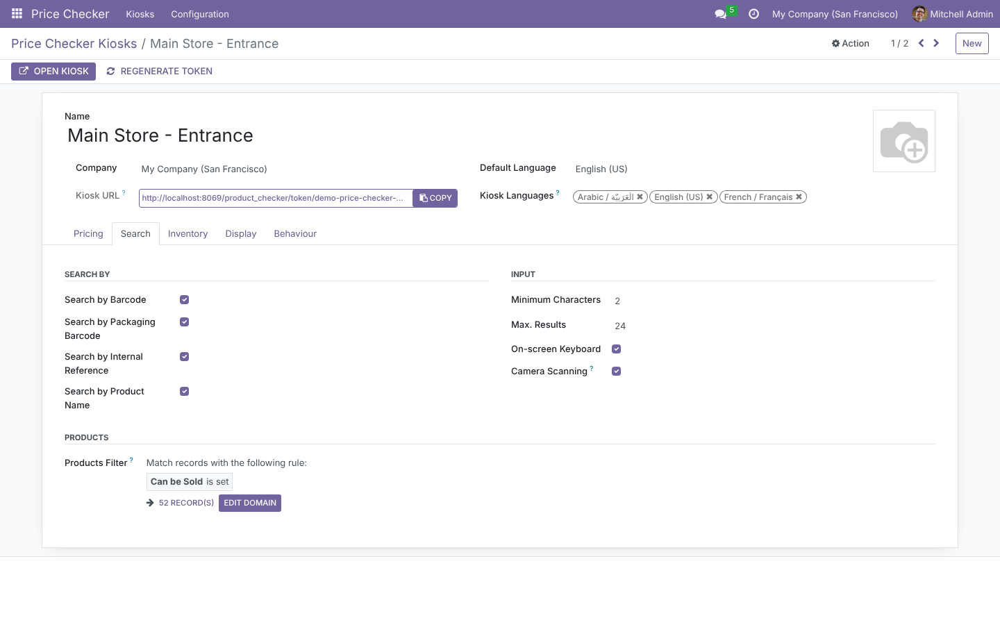
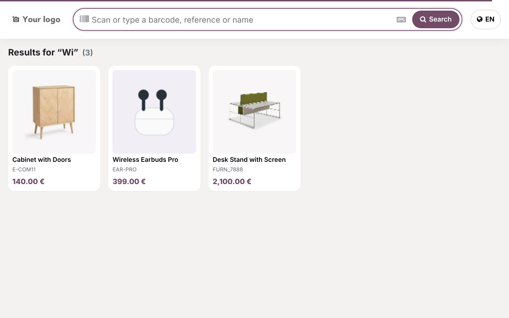
Colours show as swatches, other attributes as large buttons. All variants are loaded with the first scan, so tapping Blue then L updates the image, the prices of every pricelist (including price extras), the Reference, the Barcode and the stock without waiting.
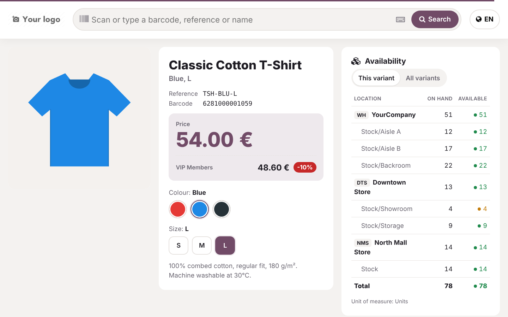
Archived variants are never shown. Values that don’t combine with the current selection are crossed out (here: red sneakers don’t exist in 43); tapping one jumps to the closest variant that does exist. Attributes set to create variants Never (sale options) stay out of the matrix.
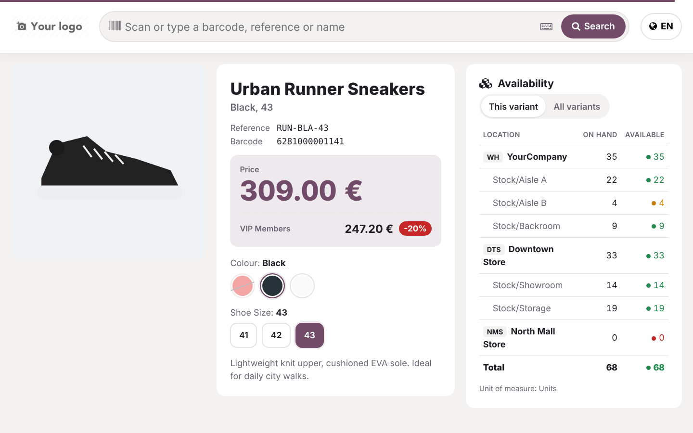
Quantities are read live: On hand, and Available after reservations. The Availability panel lists each warehouse with its locations; the All variants tab shows every variant × warehouse at once – tap a row to switch to that variant. On the Inventory tab choose Per Warehouse or Per Location, limit the Warehouses, or pick exact Locations (children included).
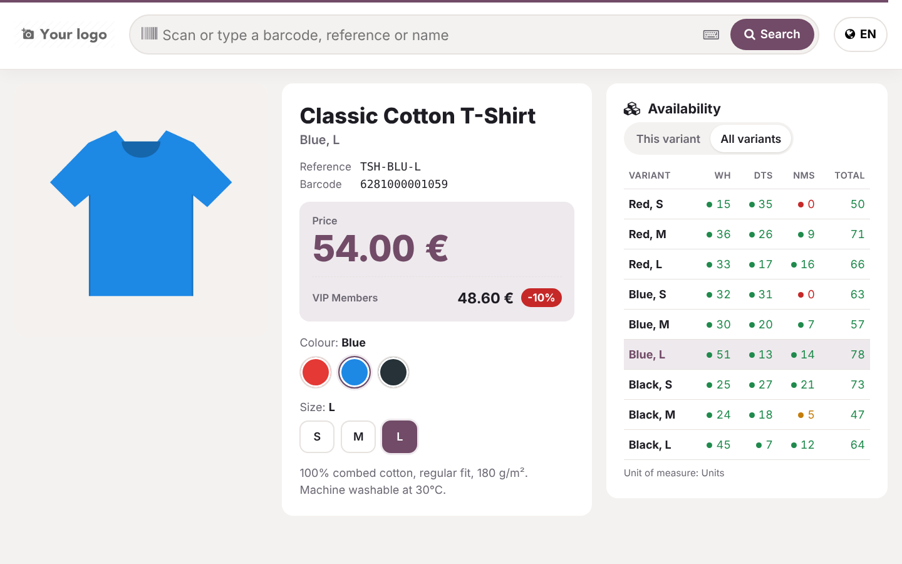
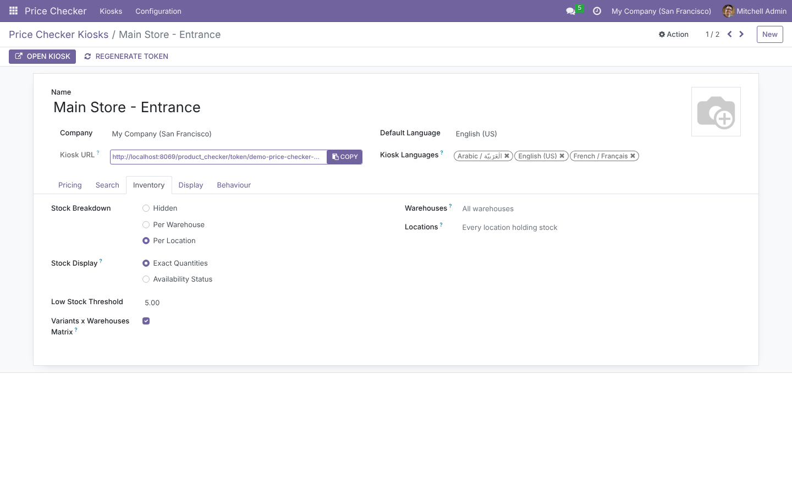
Prefer not to show exact quantities? Set Stock Display to Availability Status: customers see In stock, Low stock or Out of stock, and the quantities are never sent to the browser. Each kiosk has its own colour, here the warehouse kiosk from the demo data.
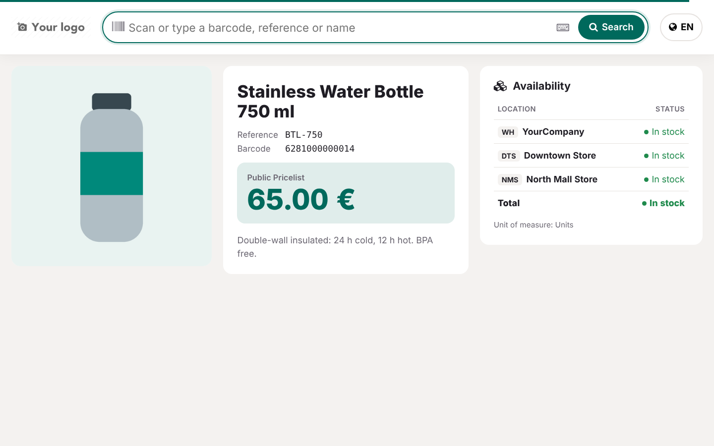
The globe button lists the Kiosk Languages. The whole screen switches: interface, product names and descriptions, attribute values, price formats, and the layout direction for Arabic. Names can be searched in any kiosk language. The on-screen keyboard follows the language (Arabic, AZERTY, QWERTZ or QWERTY) with ABC and 123 shortcuts for references. With Back to Default Language When Idle, the next customer starts in your default language.
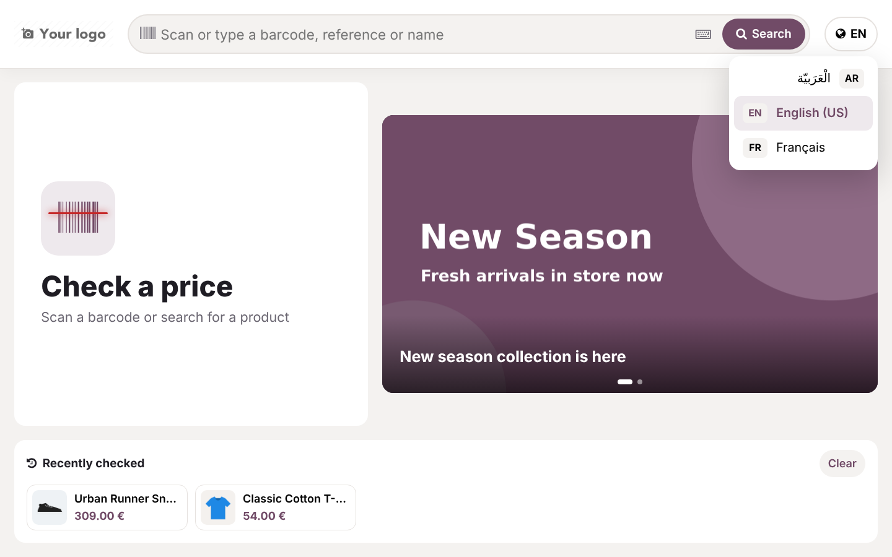
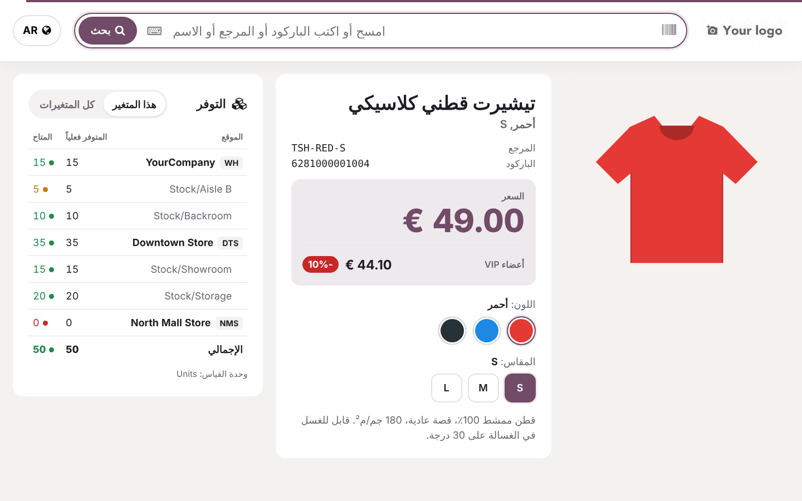
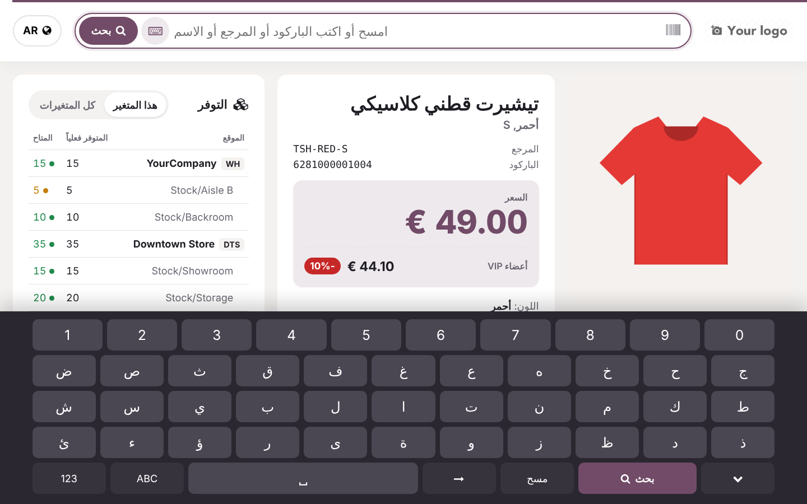
While idle the kiosk shows your Welcome Title, a slideshow of Promotions (translatable captions) and the Recently checked products of the session, refreshed in the current language. After Auto-clear After (s) seconds without a touch, results are cleared – a thin bar at the top shows the countdown.
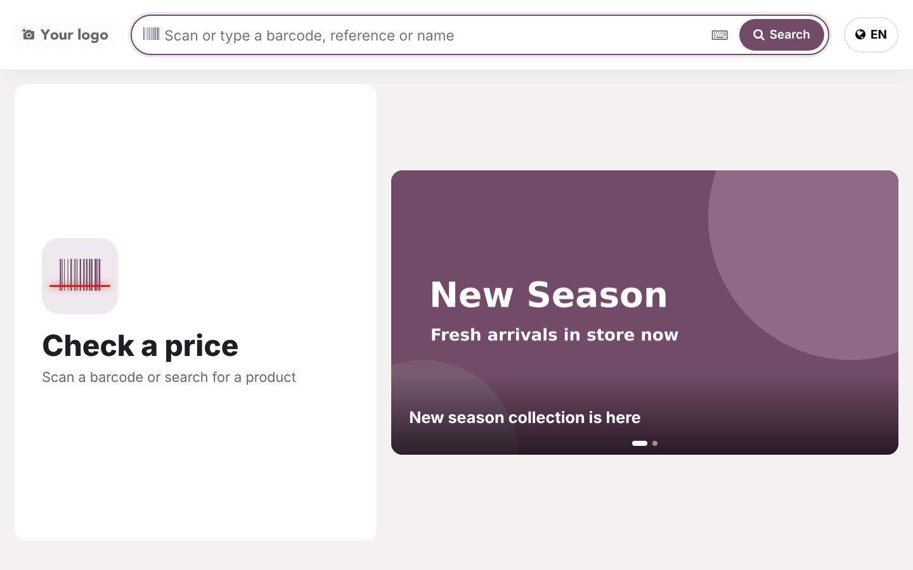
Large touch targets, landscape and portrait layouts, and a phone layout that stacks price, variants and stock.
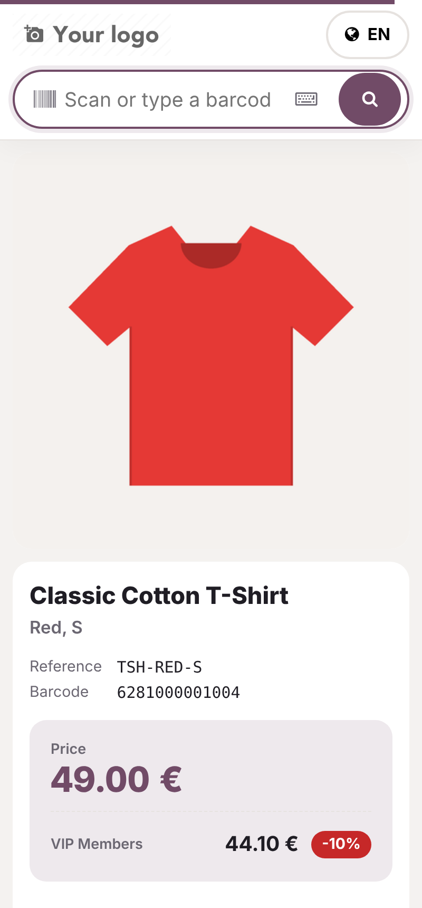
Each cell is coloured from the quantity Available and the kiosk’s Low Stock Threshold.
Handled by the code and covered by the automated tests.
Two groups in the Price Checker section of the user form, plus the public kiosk itself.
| Who | Sees / can do |
|---|---|
| Price Checker / User | Reads the kiosks of their companies; never sees the access token or Kiosk URL. |
| Price Checker / Administrator | Creates and edits kiosks, opens them, copies and regenerates tokens. Granted to the administrator at install. |
| Kiosk visitor (public) | Only the products in the kiosk’s filter, through dedicated endpoints returning the displayed fields; no generic data access. Pages are noindex, not cached and never send the token as referrer. |
| Multi-company | Record rule: kiosks are visible only within their company. |
| Odoo version | 16.0, Community and Enterprise |
| Depends on | stock, http_routing (taxes used when account is installed) |
| Python dependency | None |
| Menus | Price Checker › Kiosks · Price Checker › Configuration › Pricelists / Product Attributes |
| Kiosk URL | /product_checker/token/<token>, optional ?lang=ar_001 |
| Models | product.checker.config, product.checker.pricelist, product.checker.promo |
| Frontend | OWL application in its own asset bundle, on web.frontend_layout; no external library |
| Translations | Arabic, French (.po files) – add more with the standard Odoo tools |
| Automated tests | 38: tokens, search methods, product filter, variant attribute filtering, prices per pricelist, multi-location stock (reservations, child locations, warehouse filter, status mode), public endpoints, translations, and a browser tour (scan, variant matrix, unavailable combination, stock matrix, history) |
| Demo data | Variant products, 3 warehouses with shelves and stock, VIP pricelist, 2 ready kiosks, Arabic & French |
| License | LGPL-3 |
Questions, a demo, or an adaptation to your own process? Get in touch.
✉ ibrahim.yahiah@gmail.com LinkedIn: Ibrahim YahiaAuthor: Ibrahim Yahia · License: LGPL-3